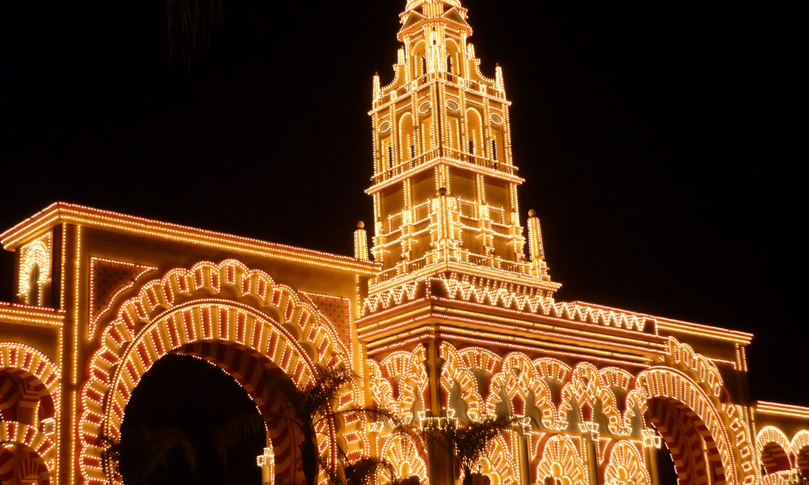
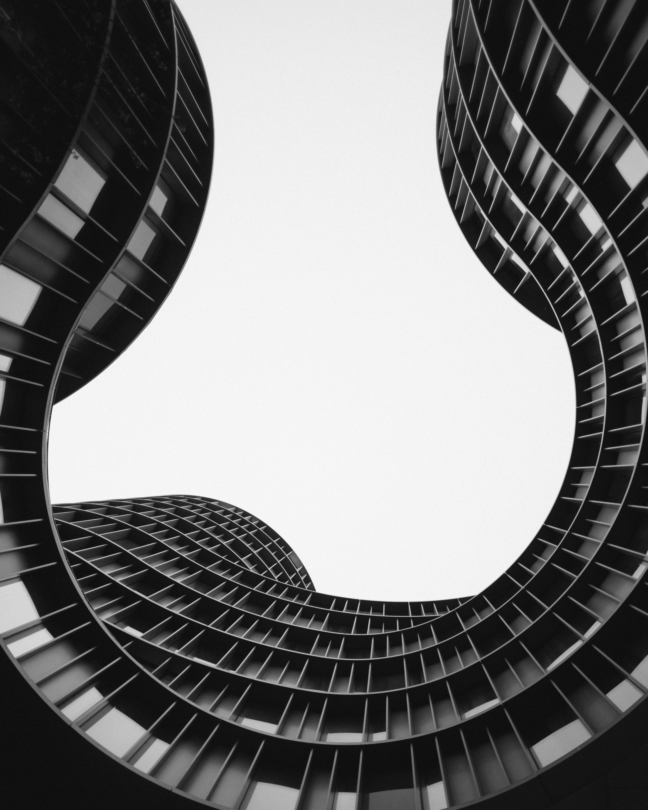

Culture et Découverte
Traditions Locales
La Feria de Cordoue

Festival annuel en mai célébrant la culture andalouse avec flamenco, chevaux et gastronomie locale.
Les Patios de Cordoue

En mai, les habitants ouvrent leurs patios fleuris au public, une tradition inscrite au patrimoine de l'UNESCO.
Parcours Touristiques
Demi-journée

Visite de la Mezquita-Cathédrale et promenade dans la Judería (quartier juif).
Journée complète

Mezquita, Judería, Alcázar des Rois Chrétiens et les Patios.
Deux jours

Programme complet incluant Medina Azahara et les musées de la ville.
Medina Azahara
Cité Palatine
Site archéologique majeur à 6km de Cordoue, ancienne ville palatine construite au Xe siècle.
785
Début de la construction de la Grande Mosquée
936
Construction de Medina Azahara
1236
Reconquête de Cordoue par Ferdinand III
1523
Début de la construction de la cathédrale dans la mosquée
1984
La Mosquée-Cathédrale est classée au patrimoine mondial de l'UNESCO
2012
Les Patios de Cordoue sont inscrits au patrimoine immatériel de l'UNESCO
Testez vos connaissances
Quiz Histoire
Testez vos connaissances sur l'histoire de Cordoue
Quiz Culture
Découvrez la richesse culturelle de Cordoue